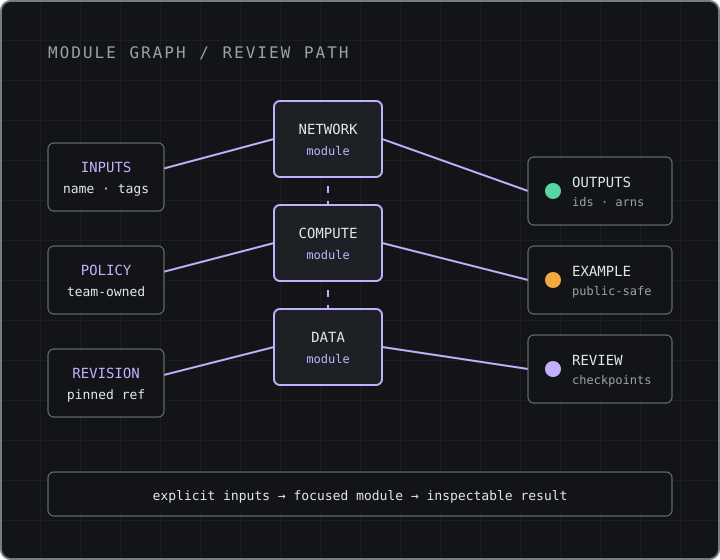
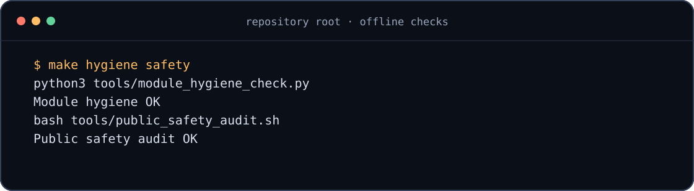

Explicit configuration
Callers control inputs instead of depending on hidden, environment-specific defaults.
Terraform building blocks for AWS infrastructure
Choose a focused module, inspect its matching example, and adapt it to your platform's security, cost and operating requirements.

One interface pattern across the catalogue
The problem it solves
The architecture keeps components replaceable and examples small enough to review. Configuration is explicit, policy decisions remain separate from execution mechanics, and assumptions live beside the implementation.
Callers control inputs instead of depending on hidden, environment-specific defaults.
Modules are focused building blocks rather than a fixed environment deployment.
Examples, validation and operating guidance make implementation assumptions inspectable.
Source: architecture and component model.
What is inside
Counts come directly from scripts/site_stats.py: module directories, all files under examples/, and top-level Markdown guides under docs/.
Focused resource starters grouped into 11 practical domains.
A same-named Terraform example exists for every module, plus two supporting example files.
Architecture, operations, security, reliability, cost and review guidance.
Module catalogue
Every entry links to its module directory on GitHub. Categories follow the resource domains represented by the module names.
Matches module names and category names.
58 modules shown
No modules match that filter.
Module anatomy
Every module follows the repository standard. The VPC module is a real example of that layout:
modules/vpc/
├── README.md
├── main.tf
├── outputs.tf
├── variables.tf
└── versions.tfmain.tfvariables.tfoutputs.tfversions.tfREADME.mdReal local output
scripts/render_site_assets.py runs make hygiene safety in the repository root, scrubs machine-specific paths and hostnames if present, and renders the command's actual output.
The module-hygiene check verifies the standard files. The public-safety audit scans for configured credential and private-key patterns.

make hygiene safety. Run in: repository root. Capture type: real offline validation run.How modules are standardized
These are repository baselines, not a substitute for an adopting team's compliance controls, account topology or production procedures.
name is the primary naming input.tags is available for ownership and cost metadata.The recommended minimum tag set is:
Read the tagging modelUse a module
The repository's VPC example uses the real name and tags inputs. The source below selects that module at the current reviewed origin/main commit.
Read its variables, outputs and review checklist.
Use a commit or release ref that your team has reviewed.
Replace public placeholders and apply your own controls.
module "vpc" {
source = "git::https://github.com/eduardopin/aws-iac-enterprise-library.git//modules/vpc?ref=4bc5a339b9bb4b5606c89e053b03593c92e5231b"
name = "example-vpc"
tags = {
Environment = "dev"
Owner = "platform"
ManagedBy = "terraform"
}
}Review provider versions, compliance requirements, account topology, IAM boundaries, naming conventions and organization-specific guardrails.
Contribute
The contribution guide keeps changes focused, public-safe and documented. The starter list turns verified gaps in examples, module descriptions and validation into concrete acceptance criteria.